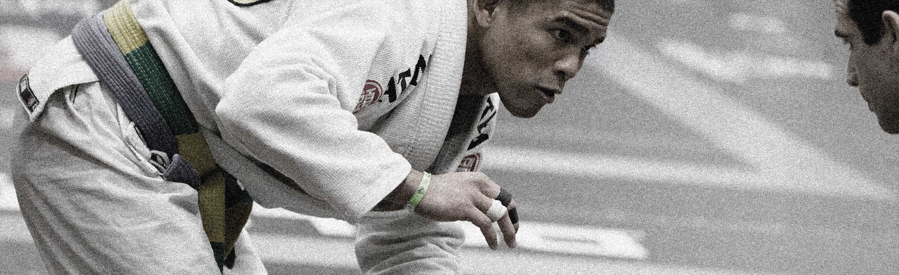
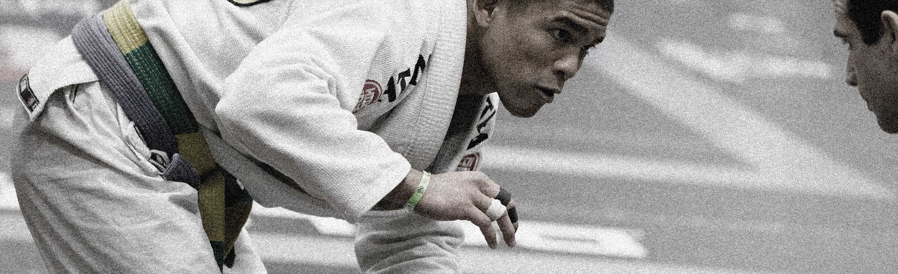

No Other Sport Like It
No Other Sport Like It
Chess-like strategy at the speed of wrestling

This isn't the Latest Fad.
This isn't the Latest Fad.
Learn the timeless martial art of legendary masters
 

Engage your mind.
Engage your mind.
The conditioning will follow.

Stay Challenged.
Stay Challenged.
“Becoming really good at Jiu-jitsu is probably one of the most difficult things a person can do.”
—Joe Rogan
Railroad Square Jiu-jitsu

About “Oss!”
Tallahassee, FL • June, 2017
Railroad Square Jiu-jitsu is a club for practitioners of Brazilian Jiu-jitsu. Our motto is “Mutual welfare, mutual benefit,” and we foster a friendly environment while learning one of the fastest growing and effective martial arts in the world.
Brazilian Jiu-jitsu (BJJ), historically derived from ground fighting techniques in Judo, is a martial art and popular competition sport more similar to Grecco-roman wrestling than striking martial arts. Students can exert themselves physically at 100% which not only makes it excellent exercise and strength training but also conditions them to be level-headed if an attacker is trying to overwhelm them. The techniques are designed for smaller and weaker people to defend themselves against bigger and stronger assailants. It is also popular in mixed martial arts.